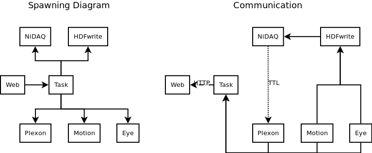
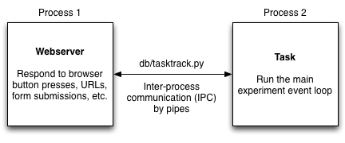

[This document still in progress]
To allow various interface and peripheral devices to operate asynchronously, a single task started through the web interface is actually comprised of many processes. For example, below might be an example of a task + features. Processes always span in the tree structure shown on the left and tend to communicate with each other in the directions shown (though all communication links are bidirectional).

In this codebase, asynchronous computation tends to happen in separate processes. In the existing functionality, there is not much need for processes to share the same memory space. The main reason for keeping things asynchronous is that the main task event loop must execute repeatedly in ~15 ms, which may be too restrictive for some tasks to fully finish execution. This means threads and processes tend to be functionally equivalent for the existing functionality.

The main mechanisms for inter-process communication (IPC) are pipes (common alternatives include shared memory, sockets, files, etc.). In normal operation, the main “parent” process is the webserver (we will treat it as one process for this discussion). Spawning another process in which to run the task allows the webserver to continue responding to browser events while the task runs independently (e.g., so you can look at old tasks and figure out what to do next).
Sometimes the side tasks requested through the web browser are totally independent and don’t require any communication, but you still want to be able to do them without freezing the browser. An example might include training a BMI decoder, which might take a few minutes but does not require user/peripheral device input. In that case, spawning the very specific “task” process is overkill since no IPC is needed. In these cases, the celery package provides functionality for simply wrapping a function and having it run asynchronously. An example of this can be seen in the file db/trainbmi.py, in which the functions cache_plx and make_bmi have been marked as celery tasks through the use of the @tasks() decorators. This adds a method ‘.si’ to the function (yes, it is strange for a function to have methods, but in python, functions are objects too!) which are used by the function cache_and_train to run the tasks asynchronously.
Code on the “client-side” browser for submitting forms, etc. runs in Javascript while the server-side webserver operates in Python. Any data generated by one end must be interpretable by the other end. This code base uses two mechanisms for transferring data between the webserver and the browser
When the task is running in a process spawned by the webserver, normal object-oriented methods of interacting with the task (e.g., to determine what state the task’s FSM is, telling the task to start a new trial, telling the task to stop, etc.) go out the window. So a new method is needed to try and send the task commands.
Let’s look at stopping the task as an example. After a task is started, the web interface presents the experimenter with a “Stop Experiment” button which enables the task to stop gracefully (save all the data and link data files to the database cleanly).
In the html file $BMI3D/db/templates/exp_content.html (contains the HTML used when you click on a block), the “Stop Experiment” button is created and given the id #stopbtn
In the html file $BMI3D/db/templates/list.html (the main HTML file), the line
$("#stopbtn").click(function() { taskaction = "stop"; })
binds the “click” action of the object #stopbtn to a function which sets the variable taskaction to "stop"
[Javascript Magic. Since this is our JS, this actually should be filled in]
In the javascript file $BMI3D/db/static/resources/js/list.js, the function TaskEntry.prototype.stop is executed. The line
$.post("stop", csrf, TaskInterface.trigger.bind(this));
sends a POST request to the URL localhost:8000/stop (the “localhost:8000/” of the URL is implicit, as the URL is sent to a relative path, not an absolute path. so actually the request is sent to CURRENT_URL+"/stop"). This is the address and port number that the webserver is listening to.
[Django Magic. Since Django is pretty well maintained, we’ll assume that they’re on top of their magic and omit the details here. Also we don’t know those details.]
The URL is cross-referenced with the list of known URLs in $BMI3D/db/urls.py, stored in the variable urlpatterns. urlpatterns is an iterable of 2-tuples, where the first element of each tuple is the matching address (specified as a regular expression) and the second element is the appropriate function to call in response to the URL. Our stop request will match with the line
(r'^stop/?', 'tracker.ajax.stop_experiment'),
The URL lookup directs the URL handler to execute the function tracker.ajax.stop_experiment, located in the file $BMI3D/db/tracker/ajax.py. At the top of ajax.py, an object called exp_tracker is instantiated. This is the singleton instantiation of the Track class defined in $BMI3D/db/tasktrack.py. The function tracker.ajax.stop_experiment instructs the exp_tracker to call the function Track.stoptask defined in $BMI3D/db/tasktrack.py
tracker.ajax.stop_experiment makes use of the higher-order function rpc. The acronym RPC is short for remote procedure call. (The number of remaining steps would indicate that the procedure is being called very remotely). rpc takes as input a function and executes that function on the exp_tracker object. In this case, the input function to rpc is a function which takes an object and calls it’s end_task method.
Track.stoptask executes the command
self.task_proxy.end_task()
exp_tracker‘s attribute task_proxy is an instance of the ObjProxy class defined in $BMI3D/db/tasktrack.py, which is a proxy object for interacting with the real task object. Remember, the real task object is running in another process and cannot be directly accessed.
ObjProxy tries to remotely look up the attribute end_task of the remotely running task. So it sends some data through the pipe to the remote process
self.cmds.send(("__getattr__", [attr], {}))
and waits for a response.
The runtask function is listening on the other end of the pipe and tries to look up the attribute end_task in the line. Since end_task is a method declared in the class and not an attribute, this throws an Exception back through the pipe. This is a somewhat confusing result. Consider the following block of code:
In [2]: class test(object): ...: def b(self): ...: pass ...: In [3]: ob = test() In [5]: getattr(ob, 'b') Out[5]: <bound method test.b of <__main__.test object at 0x10b2fb290>> In [6]: ob.__getattr__('b') --------------------------------------------------------------------------- AttributeError Traceback (most recent call last) <ipython-input-6-f30a43e210fa> in <module>() ----> 1 ob.__getattr__('b') AttributeError: 'test' object has no attribute '__getattr__'In the snippet above, the built-in function getattr has a different behavior from ob.__getattr__. So sometimes Python treats functions as objects, but declared functions are not attributes of a class. (You can, however, have attributes which are functions..)
When ObjProxy receives an Exception, it assumes that the exception was due to a function lookup. So it creates a FuncProxy object. This FuncProxy object is functionally equivalent to self.task.end_task from (8)
Now that the function self.task.end_task has been looked up, the command self.task.end_task() is executed. FuncProxy sends through the same pipe the object ('end_task', [], dict()), instructing runtask to call Task.end_task instance method with no arguments.
Finally, we execute what appears to be the same line of code as (8)
self.task.end_task()but on a different object. This time, self.task attribute is an instance of riglib.experiment.Experiment
riglib.experiment.Experiment.end_task sets a boolean flag which instructs the event loop to gracefully exit.
The browser provides a good medium not only for sending the task commands through various buttons and knobs but also for receiving feedback about the current state of the task (e.g., what phase of the trial is currently ongoing? how many rewards per minutes is the subject achieving?). Such feedback is handled through the db.websocket module and the feature db.websocket.NotifyFeat which is automatically added to all tasks which start through the browser.
Every descendant of riglib.experiment.Experiment (which should be every task..) has a dictionary called self.reportstats. This dictionary can use any string as a key and any JSON serializable object as a value. When the set_state function of the task runs, the data from the dictionary is sent to the Report field of the browser. Since it is a dictionary, any text-based data which is useful to the experimenter can be sent to the browser for better control over the experiment.
Creating database records
When tasks are started from the browser using the “Start Experiment” button, a chain of events similar to the “Stop Experiment” events is executed. A new database record is created as an empty slot to store data about the current experiment. The function db.tracker.ajax.start_experiment creates a new TaskEntry row and links the appropriate Subject and Sequence records. If the “Start Experiment” button is pressed, this row in the TaskEntry table is saved so that files can be linked to the TaskEntry database record after the experiment is finished. If the “Test” button is used, then the Django object is only a python object and is not stored to the database table.
Note
the database file changes every time you run a new experiment block, so you may want to back up snapshots of the database as it changes, e.g., make a copy of the database at the end of each experiment session, just in case.
Linking files
When tasks started from the browswer interface are to be saved, database records of files must be created and linked back to TaskEntry objects. However, since the task runs in a process outside the webserver, it is unsafe for the remote process to directly write to the database, as this may result in multiple processes writing to the same database at the same time and may corrupt the database.
To allow remote access to the database, db/tasktrack.py uses the xmlrpclib library:
database = xmlrpclib.ServerProxy("http://localhost:8000/RPC2/", allow_none=True)
self.task.cleanup(database, self.saveid, subject=self.subj)
database is an object with access to the methods of db/tracker/dbq.py, which contains the code which would be used to record various types of files in the database.